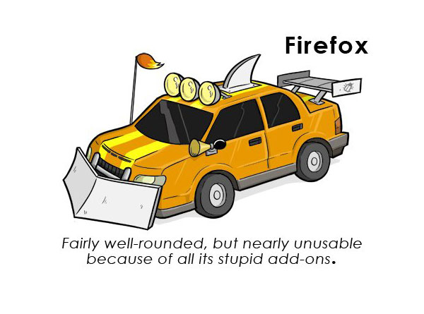
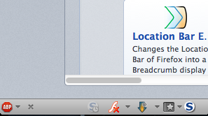
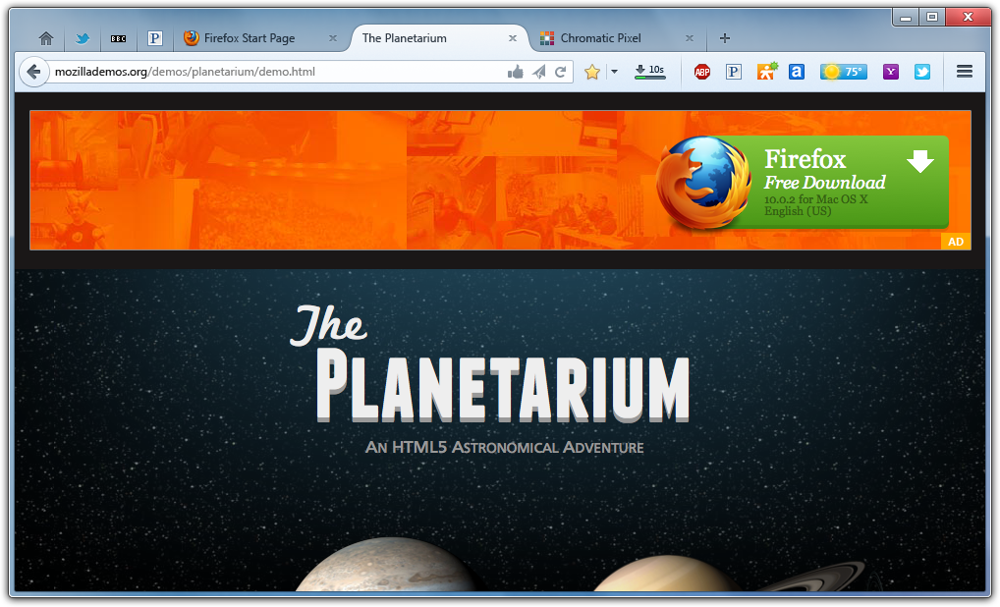

Add-ons on Top!
Jeff Griffiths (
jgriffiths@mozilla.com
/
@canuckistani
)
Add-ons on Top!
[history]

Firefox 4 / The Add-on Bar

This didn't stop anyone...
Many add-ons still put buttons in the nav bar.
Erik Vold's jptoolbarlib is
*by far*
the most popular 3rd party Jetpack module
It's the single most common question on Stackoverflow
shorlander to the rescue!

STOP
demo time!
Thanks!
Questions / discussion?
Jeff Griffiths (
jgriffiths@mozilla.com
/
@canuckistani
)